Implantologie
Cea mai rapidă cale spre un zâmbet perfect, prin implanturi dentare durabile ce înlocuiesc rădăcinile dinților naturali.
- Este un sistem care se fixează în osul maxilarului și reprezintă rădăcina artificială pe care se construiește un dinte artificial;
- Implantul dentar reprezintă soluția optimă pentru tratamentul implanto-protetic clasic efectuat în două etape, sau modern cu încărcare imediată – conceptul One Day Implant;
- Oferă soluții pentru înlocuirea oricărui dinte absent atât la maxilar, cât și la mandibulă, fiind suficient de rezistent pentru zona molarilor, dar în același timp oferind rezultate estetice foarte bune în zona frontală;
Estetica
Tratamente rapide și non-invazive de albire dentară cu tehnologii moderne, precum lampa Philips Zoom!
- Detartraj
- Air flow
- Periaj
- Fluorizare

Parodontologie
Aceasta vizează afecţiuni ale gingiei şi osului alveolar, precum şi ale ligamentelor ce susţin dintele în alveolă.
- Netratată la timp, această inflamare a gingiilor se poate extinde la nivelul osului (sub gingii), atacând rădăcina dintelui – această etapă a apariției bolii parodontale se numește parodontită și, conform studiilor, este prezentă în rândul a peste 40% din adulții tineri.
- Descoperită în timp util, boala parodontală poate fi ținută sub control, iar sănătatea gingiilor și a rădăcinii dinților restabilită.